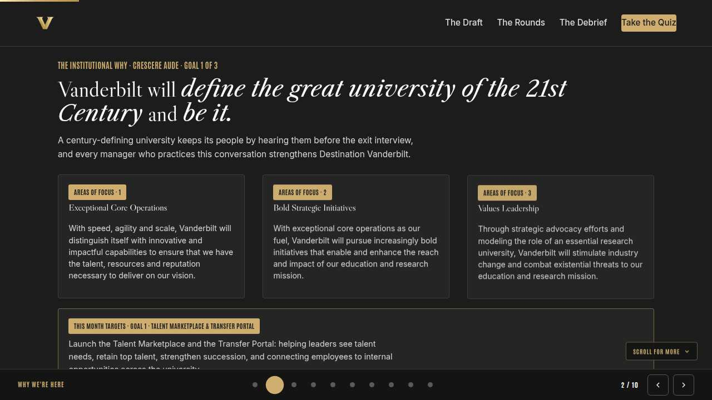
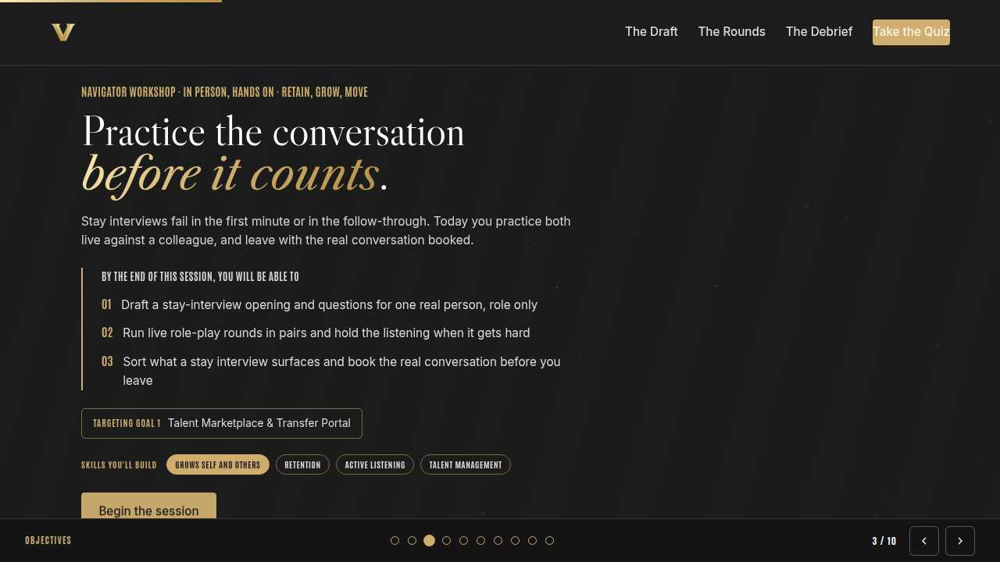
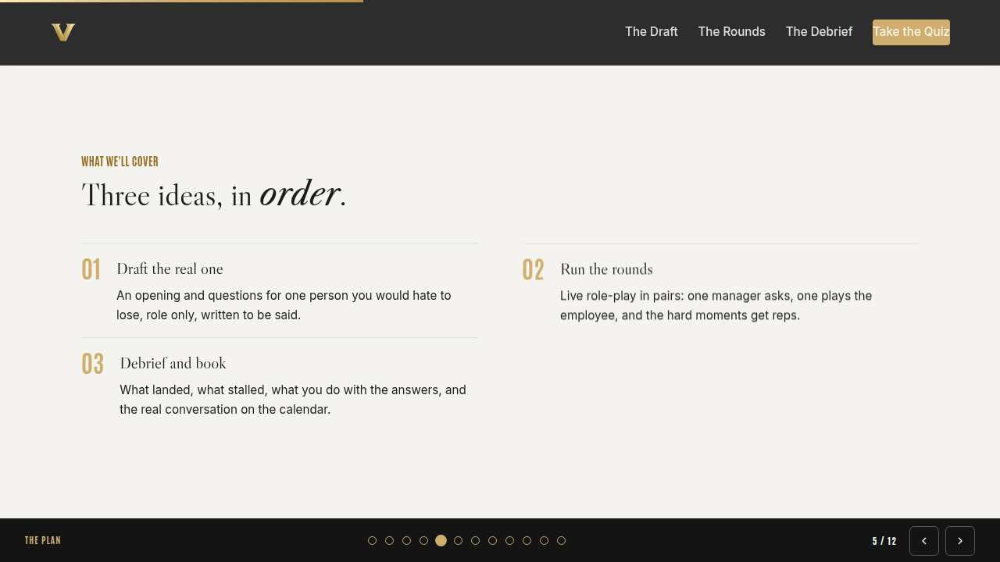
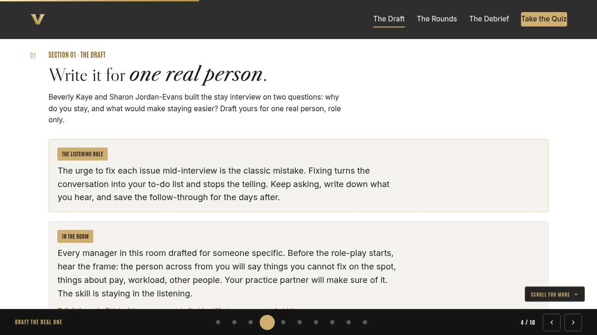
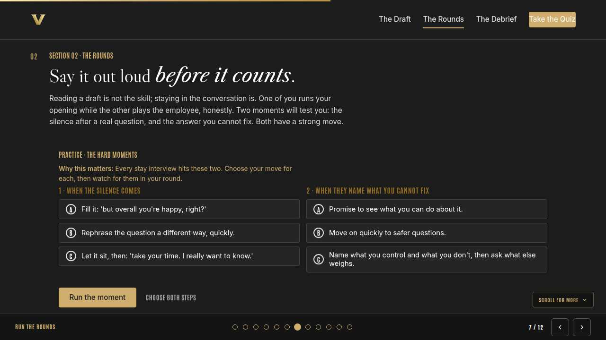
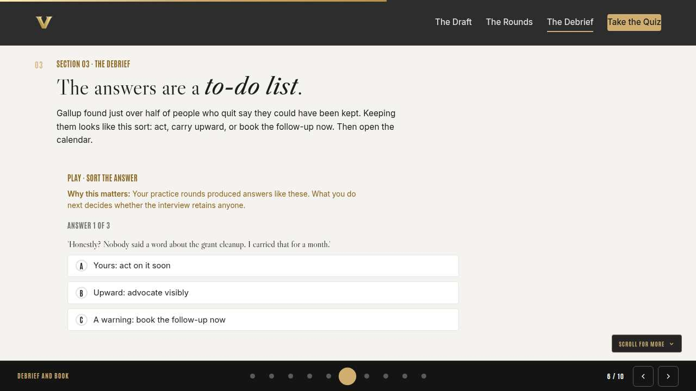
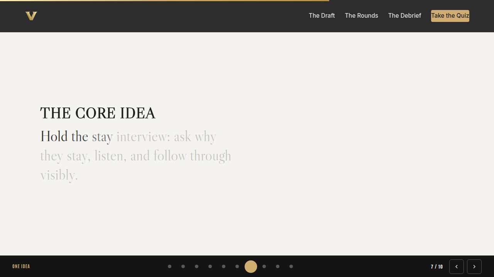
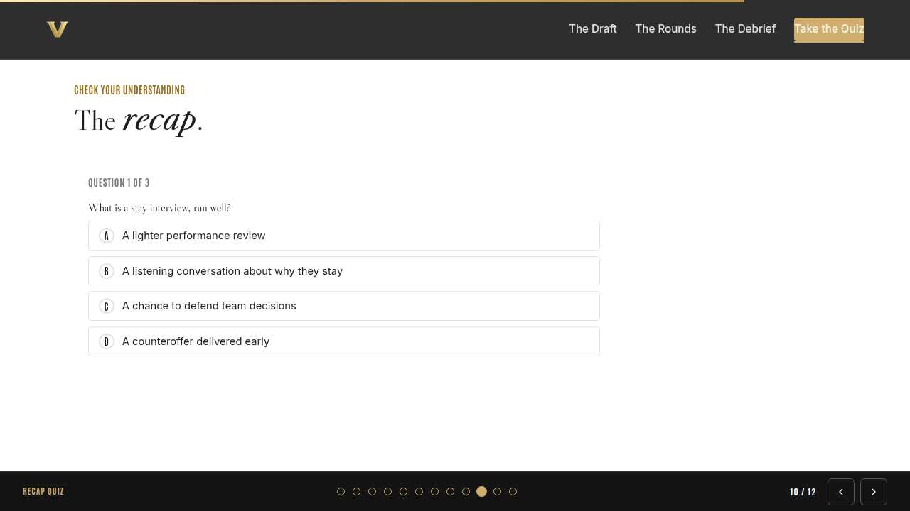
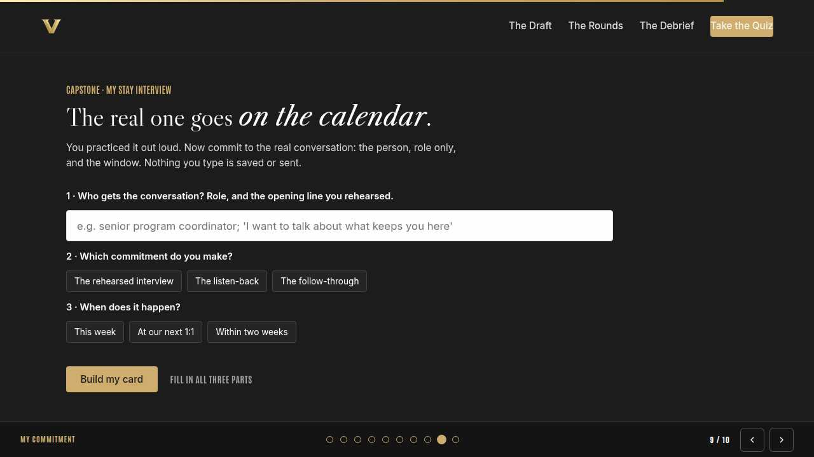
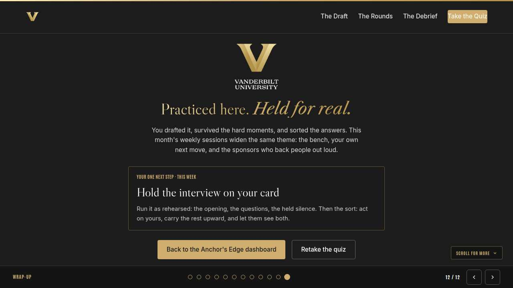

Vanderbilt · Anchor's Edge · ATD facilitator guide · print edition
The Stay Lab, the facilitator guide

Run of show
| Screen | Full (min) | Core (min) |
|---|---|---|
| Welcome / QR | 3 | 2 |
| Why we're here | 4 | 2 |
| Objectives | 2 | 1 |
| Agenda | 2 | 1 |
| Draft the real one | 9 | 6 |
| Run the rounds | 11 | 8 |
| Debrief and book | 9 | 6 |
| The core idea | 2 | 1 |
| Recap quiz | 5 | 4 |
| Capstone commitment | 5 | 3 |
| Closing | 2 | 2 |
| Total | 54 | 36 |
The goal this month serves
Goal 1, Talent Marketplace & Transfer Portal.
Audience
Vanderbilt people managers and team leads, in person. Tables of four to six with room to pair off for role-play; navigators circulate during rounds. Works from eight managers to a full room; every exercise runs roles only, never names.
Room setup
In person, navigator led: projector plus presenter device, tables that pair easily, learners on their own devices via the welcome-slide QR. Nothing typed into the deck is saved or sent.
Materials
- Meeting platform with screen share and breakout rooms; deck link ready to paste in chat
- Facilitator machine with the facilitator edition open; notifications off
- Learners on their own devices with the learner link
- Chat open for share-outs; the capstone copy button pastes there cleanly
A week before
- Run the learner edition start to finish and do every interaction honestly; you will demo at least one live.
- Read this month's theme page on the Anchor's Edge dashboard so the goal tie-in is fluent.
- Send the invite with the learner link and one line on what to bring.
The day before
- Test screen share with the facilitator edition; confirm the notes rail is readable.
- Open the learner link on a second device; the QR must land there.
- Run the section interactions once so you can drive them without reading.
30 minutes before
- Welcome slide up as people join; link pasted in chat.
- Close every other tab; silence the machine.
- Breakout rooms pre-configured in pairs.
When things go sideways
If The projector or room screen fails: The deck lives on learner phones via the welcome QR; narrate from your own device. The lab is conversation and paper; nothing essential needs the big screen.
If An odd number of managers shows up for the rounds: Make one triad: two run the round while the third observes with the listening rule in hand, then rotate. The observer seat is a bonus, not a bench.
If Someone names the real employee while drafting or debriefing: Protect them warmly and immediately: 'Hold that. Roles, never names.' The draft works identically with the role, and the practice partner should be inventing details anyway.
If A round surfaces something real and serious, like a manager realizing mid-round that their person is already leaving: Pause their round quietly, acknowledge it, and point them to the booking step now: the follow-up conversation this week is the move. Offer a navigator debrief after the room closes.
Tough questions, ready answers
Q: Won't asking why they stay put leaving on their mind?
Gallup's exit research runs the opposite way: half of leavers say their organization could have kept them, and most heard silence in their final months. The interview signals attention, and attention is a retention lever. What plants leaving is silence plus a recruiter's call, and the recruiter is already calling your best people.
Q: What if they use the interview to demand a raise?
Then you use the move you practiced: name what you control, carry the case upward visibly, and keep asking what else weighs. Pay is rarely the whole story, and the rest of the story is usually yours to act on.
Q: How is this different from the succession and bench work this month?
Same goal, opposite direction. The bench plans the growth you can see; the stay interview surfaces the reasons and risks you cannot. Run both and you are managing retention instead of reacting to resignations.
Copy-paste templates
Pre-work invite (paste into the calendar invite)
Subject: The stay-interview practice lab, in person. Come with one person in mind you would hate to lose; you will never say their name. You will draft the real conversation, practice it live against a colleague, and book it before you leave. Bring your calendar.
7-day pulse (send one week after)
Subject: Did the interview happen? Three lines, reply whenever: 1) Did the stay interview on your card happen? 2) What did they say that you could not have guessed? 3) What is your first follow-through, and when?
After the session
Seven days out, send the pulse: 'Did the stay interview on your card happen? What did they say that you could not have guessed? What is your first follow-through?' Count of held interviews is the Level 3 metric for the workshop.
Welcome / QR Full 3 min · Core 2
Get everyone into the deck on their own device and set the tone: 90 minutes, in person, hands on.
Say
“Welcome to the Navigator Workshop. Scan the code so this session runs on your device too. 90 minutes, one focus: The stay-interview practice lab: draft it, run it live in pairs, book the real one.”
Do
- Slide projected as people arrive; phones up before you speak.
- State the norm once: type into your own device, nothing you enter is saved or sent.
Watch for: People lurking without the deck open. The interactions only land if the deck is on their screen.
Transition: “Before the topic, thirty seconds on why Vanderbilt is asking for this hour.”

Why we're here Full 4 min · Core 2
Anchor the session in the Chancellor's charge and name the goal this month serves, inside one minute.
Say
“One sentence from the Chancellor sits over everything we do: Vanderbilt will define the great university of the 21st Century and be it. A century-defining university keeps its people by hearing them before the exit interview, and every manager who practices this conversation strengthens Destination Vanderbilt. This month serves Goal 1, Talent Marketplace & Transfer Portal.”
Do
- Read the mission line slowly, once; name the goal, once.
- No discussion here; the whole slide is under a minute.
Transition: “Here is what you will be able to do in 90 minutes.”

Objectives Full 2 min · Core 1
Set the contract for the session in under a minute.
Say
“By the end of this session: draft a stay-interview opening and questions for one real person, role only; run live role-play rounds in pairs and hold the listening when it gets hard; sort what a stay interview surfaces and book the real conversation before you leave. That is the whole contract.”
Do
- Read the three objectives briskly; do not elaborate yet.
Transition: “Three stops to get there.”

Agenda Full 2 min · Core 1
Show the path so the room can pace itself.
Say
“Three stops: draft the real one, run the rounds, debrief and book. Each one has something to play with, so keep the deck open.”
Do
- Point once at each stop; ten seconds each.
Transition: “Stop one.”
Core path: Core: skip the read-through, gesture at the slide in passing.

Draft the real one Full 9 min · Core 6
Frame the stay interview as a listening conversation and get every manager to a said-aloud draft for one real person, role only.
Say
“Everyone in this room can name someone they would hate to lose. Today you stop hoping they stay and start asking. The stay interview comes from Beverly Kaye and Sharon Jordan-Evans, who built it on two questions: why do you stay, and what would make staying easier. Nobody is being reviewed and nothing is being renegotiated; you are there to hear them. You will draft it for that one person now, role only, and your table will tell you how the opening actually lands.”
Do
- Frame the drafting: one real person, role only, an opening plus two questions, written to be said aloud, never read.
- Show the listening rule card and the In the room context, then run the discussion: what are you afraid they will say? Take a few voices; the fear names the avoided conversation.
- Run the table round: openings read aloud, tables answer with the first feeling, then sharpen. Navigators listen for openings that start with the org chart or with HR.
Ask
“What is the first feeling your opening produced at the table?”
Expect:
- Seen and valued, when it was specific
- Suspicion, when it sounded like process
- Confusion, when it was vague warmth
Respond: The table just gave you the employee's answer in advance. Specific attention lands; process framing and vague warmth get the polite yes.
Debrief: One person, role only, an opening that proves attention, two questions you want answered. The draft is done when the table stops flinching.
Watch for: Managers drafting for their easiest person instead of the one the interview is for. Ask quietly: is this the person you would hate to lose, or the one who is comfortable to ask?
Transition: “Drafts ready. Now they get said out loud.”
Core path: Core: skip the table round; each manager says their opening to one neighbor and takes the first-feeling answer.

Run the rounds Full 11 min · Core 8
Give every manager live reps: run the draft against a partner playing the employee, and meet the silence and the unfixable answer.
Say
“Now the lab part. Pair up. One of you is the manager, running your real draft. The other plays the employee, from the role description only, honestly: give real answers, go quiet when a question deserves thought, and at least once, name something the manager cannot fix. Then swap. Before you start, we train the two moments that break stay interviews: the silence and the unfixable answer.”
Do
- Run The hard moments on learner devices first; it loads the strong moves before anyone needs them.
- Pair managers across tables so nobody role-plays with someone who knows the real person. Restate the norm once: roles only, never names, and the employee player invents details rather than borrowing a real colleague's.
- Run round one, swap, run round two. Navigators hover, listening for leading questions and rescue promises; they whisper coaching between rounds, never during.
Ask
“Where did your round stop feeling like role-play?”
Expect:
- The held silence
- The moment the employee player pushed on pay or workload
- When the opening was said instead of read
Respond: That moment of realness is the rep you came for. The real interview will feel exactly like that, and now it is familiar instead of frightening.
Debrief: The silence is the answer forming; hold it. The unfixable answer wants honesty and advocacy, never a soft promise. Both moves are now in your hands.
Watch for: Employee players going easy on their partner. Nudge tables: the kindest thing a practice partner can do is make it hard here, where it is cheap.
Transition: “Rounds done. Now we sort what they surfaced, and book the real thing.”
Core path: Core: one round instead of two; whoever did not run a draft books first slot at the next lab, and both still sort answers in the debrief.

Debrief and book Full 9 min · Core 6
Sort the surfaced answers into act, advocate, or follow up, and get the real conversation onto calendars before the capstone.
Say
“A stay interview only retains if the answers go somewhere. Gallup found more than half of people who quit say their organization could have kept them, and most heard nothing from anyone in their last three months. So, three piles. Things in your control, recognition, growth, attention: act on them fast. Things above you, pay, policy: advocate upward, visibly, and say you did. And warnings, anything that sounds like a foot near the door: those get a follow-up booked now. Sort what your rounds surfaced, then open your calendar.”
Do
- Run Sort the answer on learner devices; it names the three piles with clean cases.
- Then the table debrief: each pair reports one line that landed and one hard answer; the table sorts each hard answer together. Chart the piles on the table flip chart so the sorting stays visible.
- Close with the booking: calendars open, the real interview goes into this week or the next two. Ask for hands as invites go out; count aloud.
Ask
“Which pile does your hardest practice answer land in?”
Expect:
- Mostly recognition and growth, which surprises people
- Pay and workload, headed upward
- A few real warnings
Respond: Notice how much landed in the first pile. Most stay levers are already yours, which is why the interview is worth holding and the follow-through is worth naming.
Debrief: Act on yours, advocate upward visibly, book the follow-up on warnings. And the real interview is on the calendar, which is the only debrief that counts.
Watch for: Bookings quietly skipped by managers whose person is the hardest to face. Circle back personally: that difficulty is the strongest sign the interview is overdue.
Transition: “Booked. The card makes the commitment portable.”
Core path: Core: skip the flip-chart sort; run the trainer, take one hard answer per table aloud, then go straight to calendars.

The core idea Full 2 min · Core 1
Land the one sentence the session exists to install.
Say
“If you keep one sentence from today, this is it. Read it once, out loud: The exit interview is a transcript of the stay interview you never held.”
Do
- Pause two beats after reading; the word animation carries it.
Transition: “The recap makes it stick.”
Core path: Core: pass through in stride; the sentence reads itself.

Recap quiz Full 5 min · Core 4
Score the learning while it is fresh; wrong answers are teaching moments, not failures.
Say
“Three questions, on your own screen. Answer honestly; the explanations are where the learning sticks.”
Do
- Give the room 90 seconds to run it individually.
- Ask for a show of results in chat: how many got 3 of 3?
- Read out the explanation for whichever question drew the most misses.
Watch for: Rushing past the why lines. The explanations carry the teaching.
Transition: “Now point it at your real week.”

Capstone commitment Full 5 min · Core 3
Convert the session into one named, dated action per person.
Say
“Make the commitment concrete. The person, role only, the opening you rehearsed, and the window. If the invite is not already sent, the card is where you promise the week it goes. Build it, then copy it somewhere you will see it at your desk. Quiet room, go.”
Do
- Two quiet minutes; everyone builds their own card.
- Invite two or three volunteers to read their card aloud or paste it in chat.
- Remind: copy the card somewhere you will see it this week.
Watch for: Vague entries. Nudge for a name-able situation and a real date.
Transition: “Last slide.”

Closing Full 2 min · Core 2
End with the next step and where this thread continues.
Say
“You practiced the conversation most managers never rehearse, and the real one is on your calendar. This month's weekly sessions carry the same theme: Manager Monday reframes the bench as a gift, Take-Off Tuesday points the Talent Marketplace and the Transfer Portal at everyone's own next move, and Thrive Thursday teaches the sponsorship that keeps talent seen. If you want a longer look at keeping your best people, this month's LinkedIn Learning pick is Finding and Retaining High Potentials; a good companion to the interview you just rehearsed, not an assignment. The only deliverable is the conversation on your card.”
Do
- Point at the next-step card; one sentence.
- Name the rest of the week's rhythm: the other sessions echo this month's theme.
Generated from facilitator/notes.json. The on-screen facilitator edition lives at ./ alongside this guide.